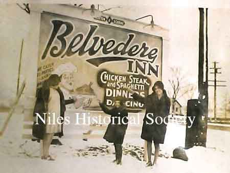

Ward-Thomas Museum


The History of the Belvedere Club in Niles, Ohio
Ward — Thomas
Museum
Home of the Niles Historical Society
503 Brown Street Niles, Ohio 44446
Click here to become a Niles Historical Society Member or to renew your membership
Click on any photograph to view a larger image, click on image again to zoom into photograph.
 PO11.328A |
The History of the Belvedere Club. There are some in our community
who would proudly tell you that they met their husband or wife
at the Belvedere Club on the strip, (5373 Youngstown Road), a
very popular place many years ago. The Belvedere Club, designed
like a road house, was THE SPOT to meet people during the 30’s,
40’s, 50’s, and 60’s. The white frame Belvedere had six
rooms; a bar, kitchen, lobby, main dining room, a dance floor,
and a small dining room in the rear. This is where industrial
executives from Packard Electric, Republic Steel and other local
mills and railroad executives held meetings while dining. |
| |
|
|
PO11.325 |
Carmen took great pride in his dance floor and kept it shined to the hilt. Whenever anyone came into the Bel without a date, that person was expected to go to the bar; or, if the weather was inclement, patrons were expected to go directly to the bar until the snow had melted off their feet or their footwear was dry. Marion D’Amico was head cook and cooked fabulous steaks on an old coal range. In later years gas was installed in the kitchen but Marion still used the coal range when baking hams. Spaghetti and steaks were the specialty of the popular spot. Carmen’s $2.95 steak was the best in the house. |
| |
|
|
PO11.324 |
Carmen’s daughter, Gloria, started working in the Bel when she was fourteen years old. Remember, there were no mechanical dishwashers in those days, so Gloria’s first job ….the dishwasher. At times she cleaned shrimp for the shrimp cocktail. Over the years, she worked at every job in the business –bookkeeping, payroll, purchasing, waitress, check girl, and hostess. In those days, a waitress had to be 21 to serve liquor. |
| |
|
| PO11.329 |
In addition to Jim
Fogarty, whom Gloria married in 1942, the bartenders who worked
there included; Jerry Guy, Gil Scarnecchia, Dick Mahan,
and Sam Mateo. James Wolfe was a faithful employee
from 1942 until the Bel closed. Mario was head cook and cooked fabulous
steaks on an old coal range. In later years, gas was installed in
the kitchen, but Mario still used the coal range when baking ham.
Spaghetti and steaks were the specialty of the house. Carmen’s
$2.95 steak was the best. During the 1930’s and 1940’s, everyone held their wedding reception at THE BEL, including Gloria, who married Jim Fogarty in 1942 while he was in the service. When he returned from the service, he went to work for Carmen and in 1954, he and Gloria bought the club. Then the best steaks were $3.95, and later $4,95. |
| Ed
Bycraft and Mac MacFarland
were deputies who regularly stopped to be sure the Fogartys were
okay and everything was under control at the Bel. Before the deputies
left, they were served a bowl of spaghetti in the back room. Many
well-known people patronized the Bel such as Louis Bromfield,
Lauren Bacall, boxing champions, Jack Dempsey and
Gene Tunney. Progress calls for many changes, but many can still remember the Belvedere Club, fine food and good friends. The Fogarty’s later opened Fogarty’s Inn on Fenton Street and still later on moved to State Route 46 in Mineral Ridge where the “Fifth Season” Banquet Hall is now located. The Belvedere always held ‘first place’ for Jim and Gloria. |
|
|
|
|
| Belvedere
Story.
Gordon Anderson Niles Daily Times 6.26.70 On the Strip. A significant bit of courtship nostalgia will be removed from the area scene when the Belvedere Club closes its doors for the final time Saturday night June 27, 1970. Built in May 1929, the Belvedere was owned and operated by the late Carmen Scarnecchia of Niles and Marion D’Amico who lives at 648 Robbins Avenue. Jim and Gloria Fogarty bought the business in 1954. Gloria is Carmen’s daughter. Probably one of the first restaurant and night spots on the Strip, the Belvedere has seen three generations of young people dance and romance in its atmosphere. “It’s quite common for young couples to talk about their grandparents and parents who came here frequently in the thirties,” Jim and Gloria explained. In the big band era, the late thirties and early forties, the Belvedere was known as the rendezvous for the best dancers in the area. “You could always count on the Belvedere having the biggest and best juke box with the latest hits,” was the common consensus of ‘swing music lovers.” A very popular place for parties and banquets, Jim said. “We hosted some of the first and biggest industrial banquets in the area. Steel and railroad executives were frequent patrons.” Many famous persons have dined at the Belvedere. Among those were Louie Bromfield (best man at Humphrey Bogart and Lauren Bacall’s wedding) Louie Bromfield weblink, Lauren Bacall, Jack Dempsey and Gene Tunney. “There has been a tremendous cycle of music styles and types of dancing,” Jim and Gloria recall, “Kids today are great but their music is hard on the ears at times. We always like god lively music that the big bands played but it wasn’t hard on your ears. Now, with these souped-up amplifiers you can almost feel the walls swelling.” “We have always felt we were a significant part of Niles. When we were in our teens we recall many people, particularly dancers like Joe and Sal Rounds, Bob Slick, Lefty Naudad, Bill Boag, Martha Rose, Mary and Martha Usted, Jim Schroth, John Morrison, Pipe Thompson, Martha Von Thaer, Kathryn Warden, Frank Bassett, and oh so many others.” The Belvedere will soon be no more,
Saturday it will all come to an end. The Belvedere will close
its doors for the last time. The grounds have been leased to Standard
Oil Company and a service station will be built on the site. |
|
|
|
|
|
|
|
{kind=link}
{kind=link}
{kind=link}
{kind=link}
{kind=link}